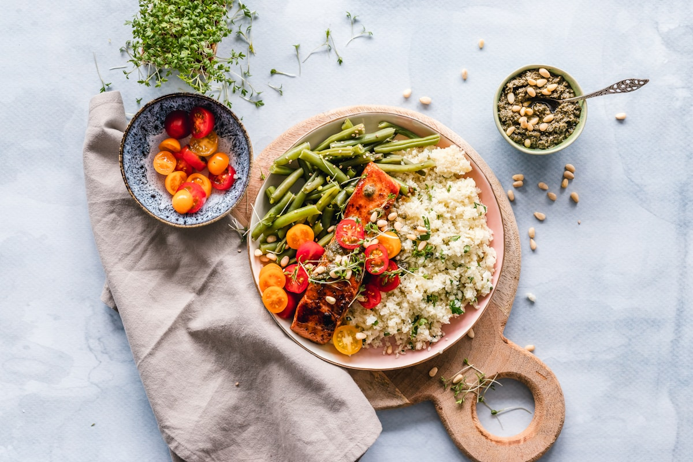
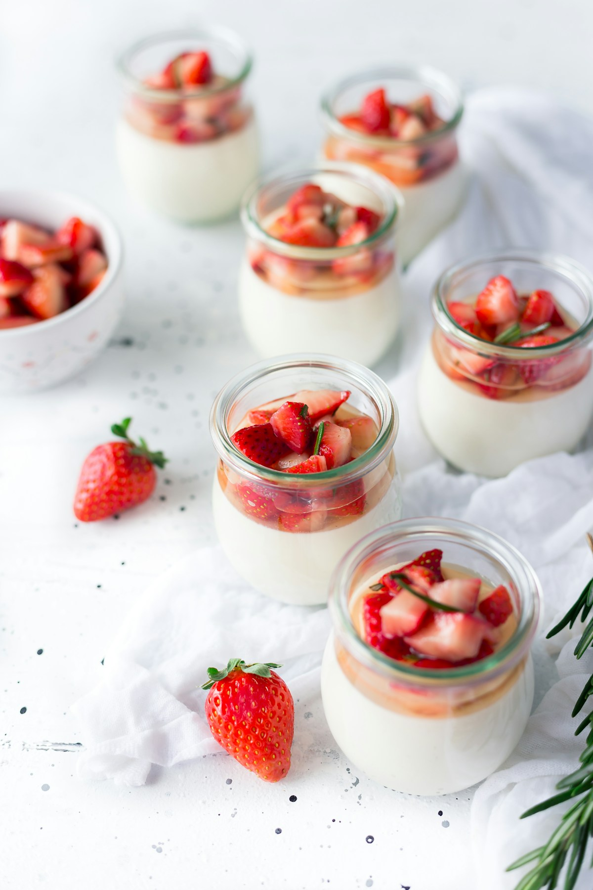
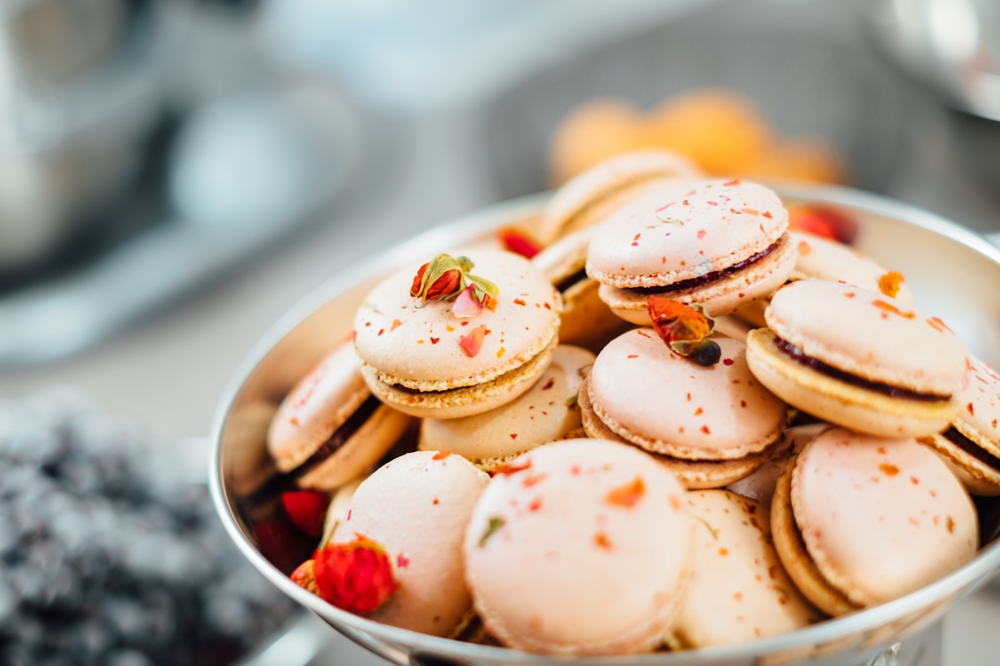

Sel & Poivre est né d'une conviction simple : les meilleures recettes ne viennent pas des restaurants étoilés, elles viennent des cuisines de famille, des carnets de mamies et des expériences ratées qui finissent par fonctionner.



Pas besoin de formation de chef. Chaque recette indique clairement le niveau, le temps et les ingrédients. Du débutant qui veut réussir ses œufs mimosa au passionné qui attaque le cassoulet.
Ici, les recettes viennent de vraies personnes — pas d'un algorithme ou d'un studio photo. Les photos sont honnêtes, les avis aussi. Si quelque chose ne marche pas, quelqu'un le dit.
Les meilleures recettes se transmettent, pas seulement en famille. Ici, chaque membre peut partager, commenter, noter et créer ses propres collections. La cuisine, ça se partage.
Sel & Poivre est né d'un constat simple : internet regorge de recettes, mais il manque un endroit sincère et bienveillant où les gens partagent ce qu'ils cuisinent vraiment.
Les grandes plateformes sont saturées de recettes sponsorisées, de photos retouchées et de vidéos accélérées à l'extrême. Ici, on préfère la réalité : une recette qui prend 2 heures ne sera pas présentée en 30 secondes.
Notre ambition est de construire un espace où cuisiner est un plaisir partagé — un endroit où une tartifle savoyarde d'un habitant de Savoie a autant de valeur qu'un tiramisu inspiré d'un voyage en Italie.
Recettes publiées
Membres actifs
Note moyenne
Entièrement gratuit
Les vrais temps de préparation, les vraies difficultés, les vraies photos. Pas de marketing culinaire.
Cuisine française, italienne, libanaise, asiatique... Toutes les traditions culinaires méritent d'être partagées.
Du respect pour les produits, les saisons, et les producteurs. On valorise les recettes anti-gaspi et locales.
Pas d'abonnement, pas de paywall. Sel & Poivre est et restera gratuit pour tout le monde, pour toujours.
Sel & Poivre est un projet indépendant, construit avec passion et sans gros budget. Si tu veux contribuer, on est toujours ouverts.
Fondateur & développeur
Passionné de cuisine et de technologie. A créé Sel & Poivre pour partager des recettes sans fioriture.
Membres contributeurs
Les vrais héros du site. Ce sont leurs recettes, leurs photos et leurs avis qui font vivre Sel & Poivre.
Tu veux nous signaler un bug, proposer une recette, suggérer une fonctionnalité ou juste dire bonjour ? Notre page contact est ouverte.